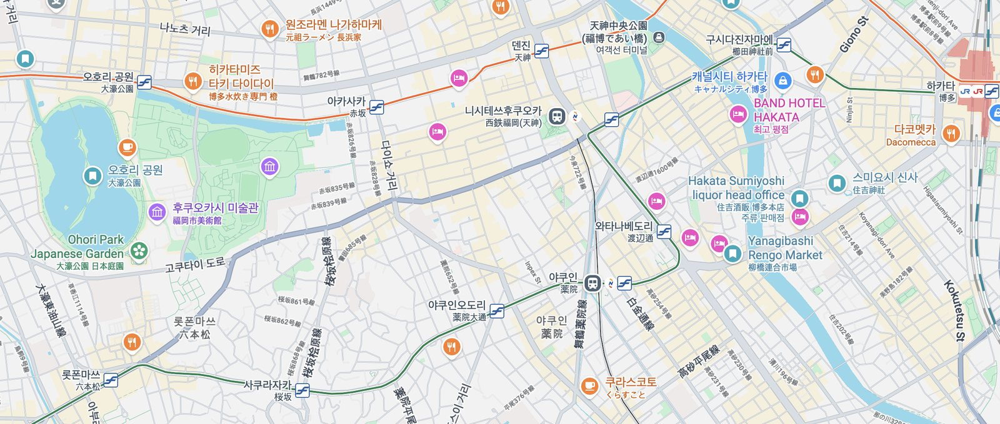
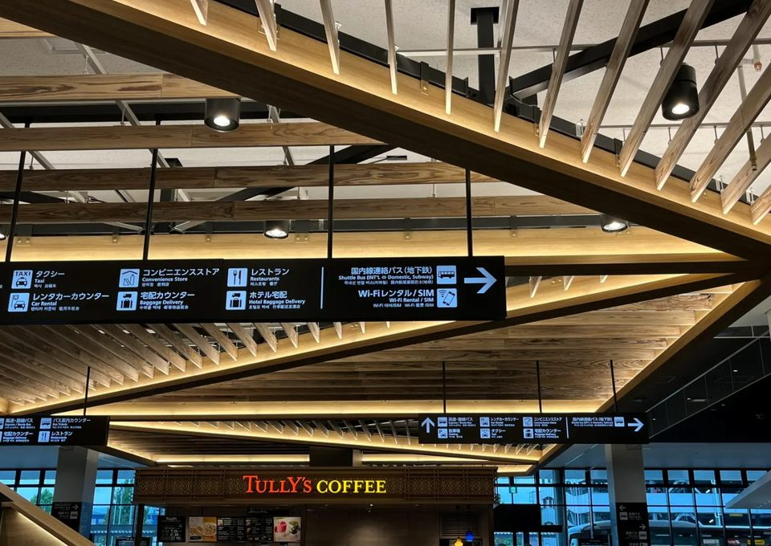
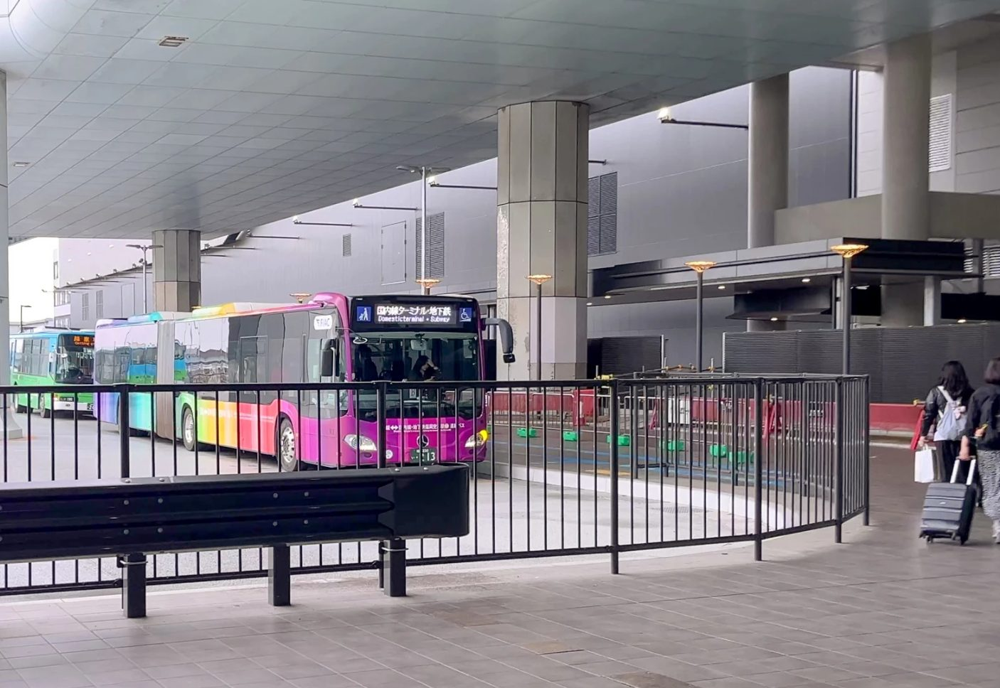
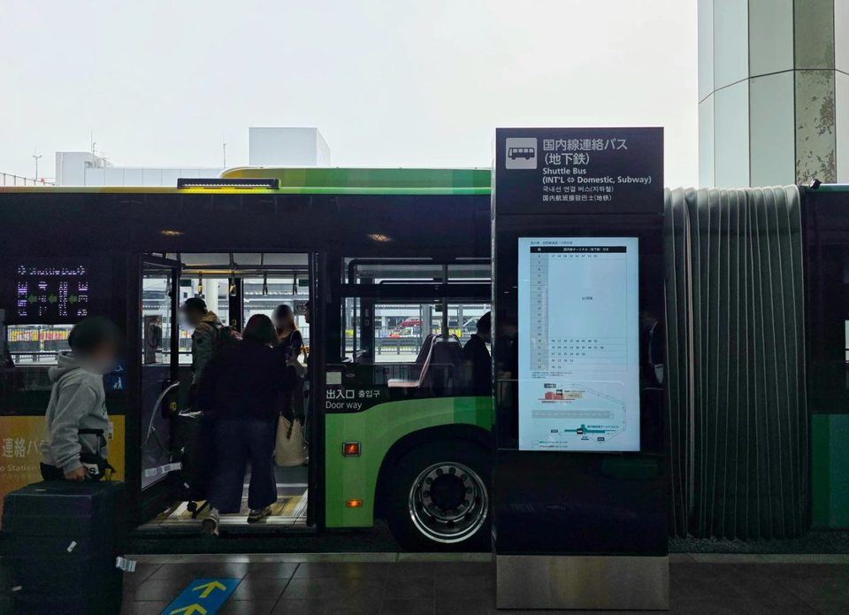
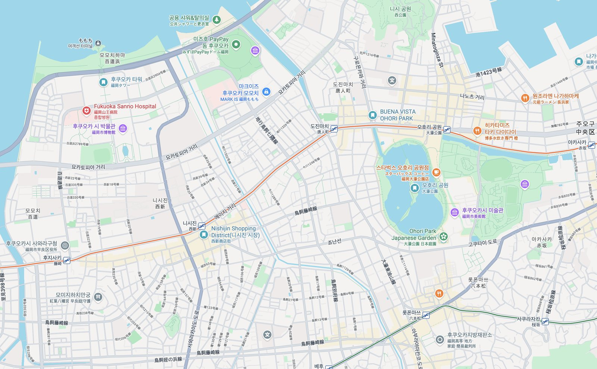
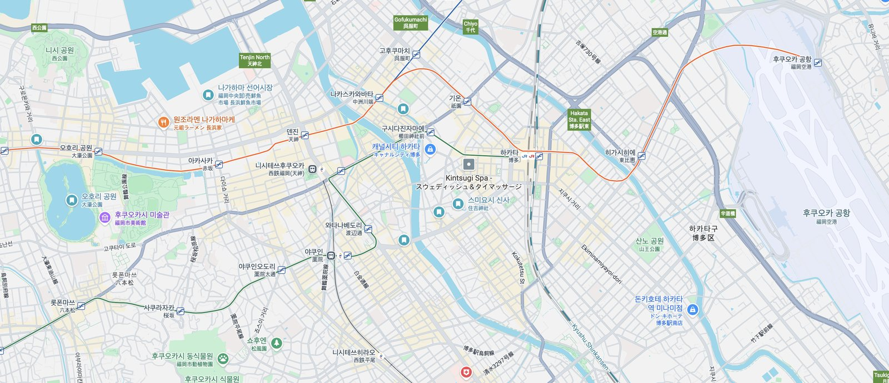

9월 24 – 27 · 오호리공원
후쿠오카 3박4일
by Joonsung Park
가는 편 · 9/24
서울 11:05 → 후쿠오카 12:30
오는 편 · 9/27
후쿠오카 12:10 → 서울 13:40
숙소
BUENA VISTA OHORI PARK
주오구 아라토 · 도진마치 도보 4~5분 · 체크인 17:00
주오구 아라토 · 도진마치 도보 4~5분 · 체크인 17:00
일행
첫날 19:00 합류
공항 마중 X · 숙소 근처에서 식사
공항 마중 X · 숙소 근처에서 식사
전체 지도
★숙소(도진마치)
1일 중심부
2일 서쪽
3일 동쪽
서쪽 모모치·니시진은 숙소 코앞, 중심부 텐진·다이묘는 지하철 3~5정거장, 동쪽 나카스·하카타.
1일차
1중심부 (아카사카·다이묘·텐진)도착 12:30

2 3 4 5숙소 체크인 6숙소 근처 식당 1공항 (동쪽)② 아카사카 · ③ 다이묘(스텝스포츠) · ④ 텐진(키르훼봉) | ① 공항·⑤ 숙소·⑥ 숙소 근처 식당은 프레임 밖(서쪽)
- 12:301후쿠오카공항 도착입국·수하물 → 국제선에서 무료 셔틀로 국내선(지하철)로 이동
국제선 → 국내선 셔틀 이용 방법 ▾
① 국제선 터미널 1층에서 "Shuttle Bus (INT'L ⇔ Domestic, Subway)" 혹은 "국내선 연결 버스(지하철)" 표지판을 따라 이동
② 정류장은 아래 사진과 같이 위치

약 5 ~ 6분 간격으로 버스가 옴. 셔틀 버스는 국내선 터미널 행만 있으며 무료. 지하철 이용 방법 ▾
- 13:30~2텐진/아카사카 · 짐 보관 & 늦은 점심공항선으로 이동 → 대형 코인로커에 캐리어 보관 (숙소는 아파트형이라 보관 불가)
팁 ▾
대형 코인로커는 텐진역·아카사카역에 여유가 있어요. 대형 캐리어가 안 들어가면 ecbo cloak 앱으로 근처 상점 짐보관을 예약하는 게 백업입니다. 체크인이 17시부터라 그전까진 맡겨두는 게 편해요. - 14:30~3스텝스포츠(다이묘) · 다이묘 거리러닝 전문점 스텝스포츠 福岡店에서 러닝 용품 → 다이묘 둘러보기
- 16:004키르훼봉 타르트 포장텐진 매장(~20시 마감). 이 동네에 있는 김에 사서 들고 숙소로
팁 ▾
매장은 20시 마감. 타르트는 하루 안에 먹는 게 제일 맛있어서, 이 동네에 있는 김에 사서 숙소 냉장고에 넣어두세요. - 17:005체크인 · 아마존 수령도진마치 → 도보 4~5분 체크인 · 숙소 아래 패밀리마트에서 아마존 물품 수령 · 타르트 냉장
팁 ▾
아마존 재팬 편의점 수령은 숙소 아래 패밀리마트에서. 아파트형이라 체크인(17시) 전엔 프런트 짐보관이 없으니 로커를 활용하세요. - 19:00~6숙소 근처 현지인 식당일행 합류 → 짐은 숙소에 두고 숙소 근처 현지인 식당에서 식사
2일차
2숙소 주변 (서·남쪽)노을 18:15경

1 2 3 4 5★ 숙소 · ① 오호리공원 · ② 로폰마쓰 · ③ 니시진(둘러보기·이른 저녁) · ④ 후쿠오카타워·모모치(노을) · ⑤ 마트 장보기·숙소 야식
- 오전1오호리공원 산책숙소 앞 · 일본정원(옵션)까지
- 낮2로폰마쓰(六本松)421 복합몰 · 과학관 · 카페거리
- 늦은 오후3니시진 둘러보기 + 이른 저녁니시진 상점가 구경하고 저녁을 조금 일찍
- 18:15경4후쿠오카타워 · 모모치 노을니시진에서 바로 이동 · 노을 🌇
팁 ▾
9월 말 일몰은 약 18:15. 니시진에서 타워까지 가까워요. 흐리면 노을은 3일차 저녁과 통째로 바꿔도 됩니다. - 저녁5마트 장보기 → 숙소에서 야식숙소 근처 맥스밸류 익스프레스 大濠店(黒門)에서 간단히 장 봐서 숙소에서 야식 (회 위주면 하이마트 福浜店 옵션)
팁 ▾
맥스밸류 익스프레스 大濠店(黒門)이 숙소 바로 근처이고 늦게까지 열어 야식 장보기에 편해요. 회·해산물로 제대로 먹고 싶으면 하이마트 福浜店(생선시장형)이 대안입니다.
모모치 노을은 날씨를 타니, 흐리면 3일차 저녁과 통째로 바꿔도 좋아요.
3일차
3동쪽 (야나기바시·스미요시·라쿠스이엔)한 방향 동선
1
2
3
4
5
6
숙소 ↔ (지하철)
① 야나기바시 시장 · ② 쿠시다·카와바타·나카스 · ③ 스미요시 신사 · ④ 라쿠스이엔(입장 100엔·다도 300엔) · ⑤ 스미요시 주류샵 · ⑥ 야쿠인(마지막 밤)
- 오전1야나기바시 시장토요일 영업 · 하카타의 부엌, 간단히 먹으며 구경
팁 ▾
오전이 가장 활기차요. 일요일·일부 수요일 휴무지만 이번 토요일은 문제없습니다. 시장 안에서 간단히 요기하며 구경하기 좋아요. - 낮2쿠시다 신사 · 카와바타 · 나카스강 건너 동쪽으로 이동하며 구경
- 오후3스미요시 신사(住吉神社)치쿠젠 일노미야 · 후쿠오카에서 가장 오래된 스미요시 신사
- 오후4라쿠스이엔(楽水園)치센카이유식 일본정원 · 입장료 100엔 · 다도(말차) 체험 300엔
팁 ▾
치센카이유식 일본정원. 다실에서 말차 한 잔(300엔)과 함께 정원을 바라보는 걸 추천해요. 입장료는 100엔. - 오후5스미요시 주류샵(住吉酒販)신사 근처 본점에서 사케 쇼핑 (하카타역 아뮤플라자 지점도 있음)
팁 ▾
본점은 스미요시 신사 근처. 짐이 부담되면 하카타역 아뮤플라자 지점에서 사서 바로 캐리어에 넣어도 돼요. - 저녁6야쿠인(薬院) 로컬 · 마지막 밤현지인들이 많이 가는 야쿠인의 술집·야식으로 조용하게 마무리 → 도진마치로 귀가
4일차
4숙소 → 하카타 → 공항출발 12:10

1 2 3 ← 숙소 도진마치① 오호리공원(아침 산책) · ② 하카타역 경유 · ③ 후쿠오카공항(출국)
- 아침1오호리공원 산책 · 브런치출발이 늦어 여유 있음
- 09:00~2숙소 출발 → 하카타 경유도진마치 → 하카타 → 국제선 무료 셔틀
- 10:003공항 도착 · 출국국제선 2시간 전 도착 · 12:10 출발 → 13:40 서울
팁 ▾
국제선은 지하철 종점(국내선 터미널)에서 무료 셔틀로 이동해요. 체크인·보안 시간을 감안해 2시간 전 도착을 권장합니다.
알아두면 좋은 것
짐 (1일차)
아파트형이라 보관 불가 + 체크인 17시. 텐진/아카사카 대형 코인로커 활용, 대형 캐리어면 ecbo cloak 앱 백업.
노을
9월 말 일몰 약 18:15. 모모치 노을은 예보 보고 2·3일차 중 택일.
마감 시간
키르훼봉 ~20시. 야나기바시 시장은 오전이 활기(일·일부 수 휴무 → 금·토는 OK).
기준역
도진마치(공항선, 숙소 도보 4~5분). 오호리코엔보다 가까움. 서쪽·중심부·동쪽 모두 여기서 출발.
아직 정할 것: 모모치 노을 날짜(2·3일차) — 여행 중 예보 보고 결정하면 됩니다. 나머지 동선은 모두 확정.